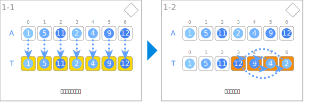
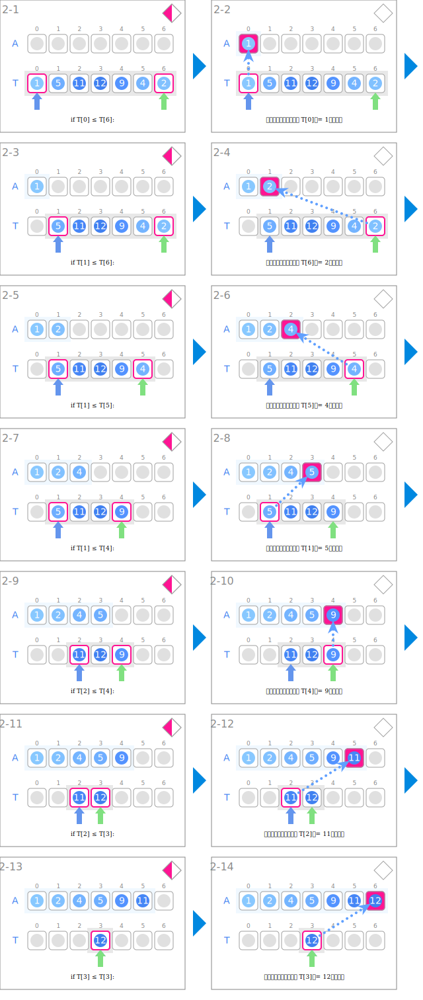
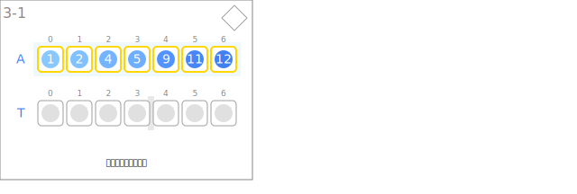

符号
| 数据 | ||
|---|---|---|
| 整数列 | A | |
| 临时存储元素的整数列 | T | |
| 输入和数据的临时保存 | ||
|---|---|---|
| 临时保存输入数据 | ||
| 反转后半部分 | ||
| 合并 | ||
 |
判断两个部分开头的值哪个更小 | if T[i] ≤ T[j]: |
 |
返回选择的元素 | A[k] ← T[?] |
| 指向前半部分的当前元素 | i | |
| 指向后半部分的当前元素 | j | |
| 扩展已排序部分的区间 | 区间[l, k] | |
| 输出 | ||
 |
输出已排序的整数列 | |
动画
输入和数据的临时保存

合并

输出
